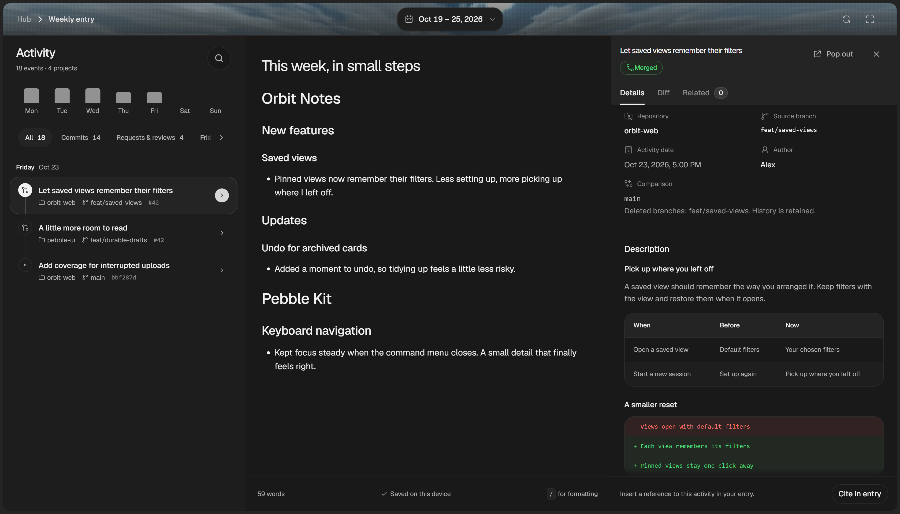

Keep a little of your week.
The things you built. The things you learned.The little moments in between.
Bring your Git activity into a quiet space to write. A few words, in your own time.

-
Revisit your work
Commits and pull requests, together.
-
Write in your own words
The parts a commit message can’t hold.
-
Come back to it
Search past entries. See how far you’ve come.